Boot Ubuntu
SBL can boot Ubuntu Linux using SBL with default OS loader. This page provides a step-by-step guide how to do so.
Note
OS Loader payload is capable of booting Ubuntu if it was installed using UEFI Payload. See Setup SBL OS Container Boot for details on configuring your boot option to support Ubuntu booting with OS Loader.
The following steps have been verified with Ubuntu Linux 20.04 LTS (64-bit).
Important
Traditional Linux booting using vmlinuz, initrd, and config.cfg is only supported with the debug build of SBL or if you have self.HAVE_VERIFIED_BOOT = 0 in your BoardConfig.py; you can test using debug build initially but for release build support consider packaging the vmlinuz, initrd, and config.cfg into container image format. See Create Container Boot Image for more details.
STEP 1: Build SBL
Note
The BoardConfig.py option self.ENABLE_GRUB_CONFIG = 1 should be set when building SBL.
Note
If you encounter any error loading the vmlinuz or initrd files due to space allocation issues you may need to increase the value of your self.PLD_HEAP_SIZE set in your board’s BoardConfig.py and re-build SBL and flash as a new IFWI. Consider the following formula for your value: PLD_HEAP_SIZE = initrd size + kernel size + 32MB
STEP 2: Flash IFWI image to the board
STEP 3: Download Ubuntu Desktop 20.04 ISO image from Ubuntu website
STEP 4: Create a USB flash drive from the ISO image with Rufus tool. The recommended settings to use for Rufus setup are given in the images below.
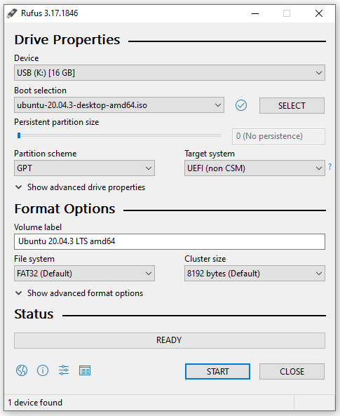 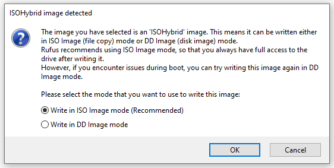STEP 5: Boot from USB flash drive
From serial console, boot to shell and enter boot command, check that your USB settings should look similar to the below (the value of File/Lbaoffset does not matter):
Idx|ImgType|DevType|DevNum|Flags|HwPart|FsType|SwPart|File/Lbaoffset
0| 0| USB | 0 | 0 | 0 | FAT | 0 | xxx *Current
If your USB settings don’t look similar to the above then enter 0 and update the settings accordingly when prompted.
Continue the boot by typing exit in the shell.
When done successfully the terminal should look something like the below.
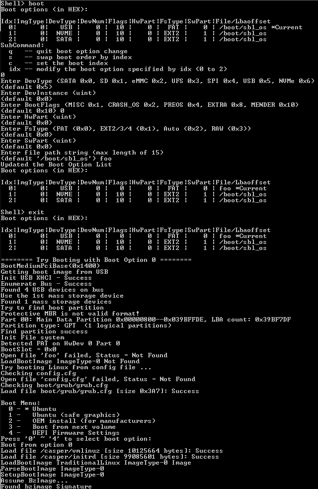Boot Menu should show up on the serial console. If grub-entry 0 does not work reboot and try grub-entry 1 to install Ubuntu.
STEP 6: Follow instructions to install Ubuntu
Once booted to the initial Ubuntu Installation UI, select the Try Ubuntu option to perform some pre-install configuration.
{kind=link}
In the upper left-hand corner select the Activities menu and open a Terminal window.
In the terminal you can use lsblk to confirm the media you will use for installation followed by gdisk to wipe the media. In this example we will be using the /dev/nvme1n1 device.
{kind=link}
Create a new GPT using gdisk before beginning the installation.
{kind=link}
Select the Install Ubuntu 20.04 LTS icon to begin the installation process.
{kind=link}
Continue the installation process until you reach the Installation Type page.
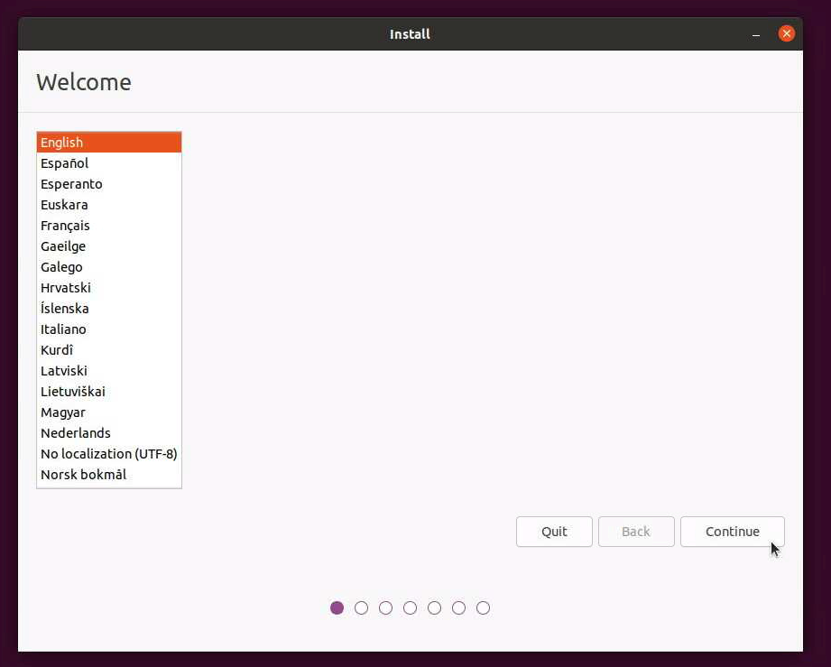{kind=link}
On the Installation Type page select the Something else option and continue to the next page.
{kind=link}
Make sure the installation media is selected in the drop-down menu at the bottom of the window. Continue by selecting the free space entry for the selected device.
{kind=link}
Proceed to click the + button to add the first partition. This first partition is optional: add a 500MB FAT32 partition.
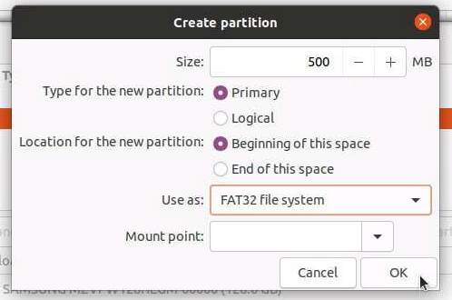{kind=link}
Proceed to click the + button to add the next partition.
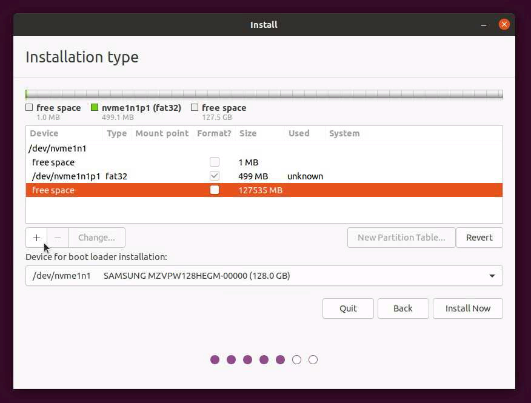{kind=link}
This partition is required: add a root partition (EXT4 recommended). In this example we leave some space for a swap partition at the end of the media (~4GB).
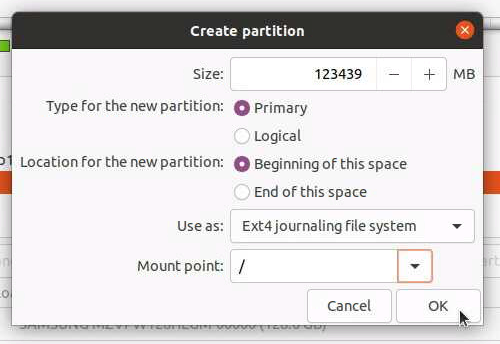{kind=link}
Proceed to click the + button to add the next partition.
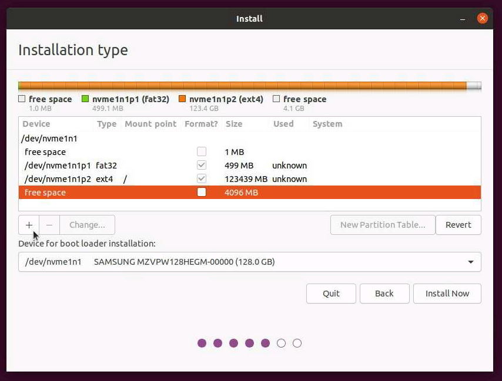{kind=link}
This partition is optional: add a swap partition.
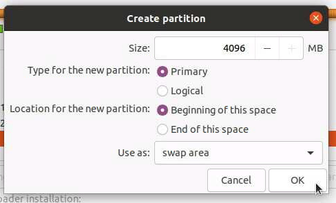{kind=link}
Once all partitioning is completed proceed by clicking the Install Now button.
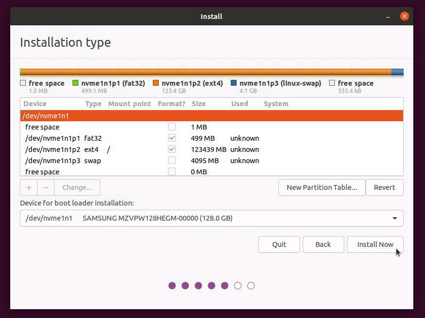{kind=link}
You may encounter the below pop-up about a “Reserved BIOS boot area”, this is not needed for SBL and can be ignored.
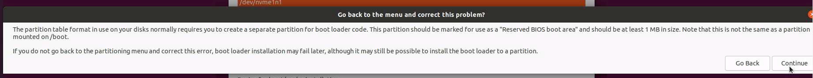You may encounter the below pop-up about no mount point for the FAT32 file system, you may go back to add a mount point if desired or you can disregard by clicking Continue.
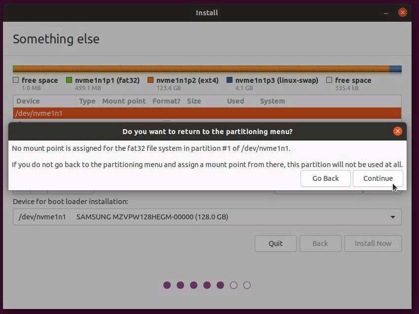{kind=link}
You should see a final summary of the partitions that will be installed. If you added all 3 of the partitions it will look similar to the below.
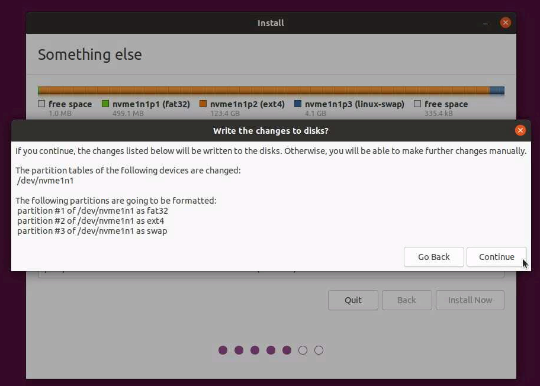{kind=link}
Continue with the installation until reaching the Installation Complete window.
Setup SBL OS Container Boot
Note
At this point the remaining steps are considered optional for OS container booting. To boot your installation your settings should match the below aside from the DevType and DevNum which may be different in your case; the value of File/Lbaoffset does not matter in this case. If earlier you skipped adding the FAT32 partition your SwPart value should be set to 0 instead.
Idx|ImgType|DevType|DevNum|Flags|HwPart|FsType|SwPart|File/Lbaoffset
0| 0| NVME | 0 | 0 | 0 | EXT2 | 1 | xxx *Current
Before restarting the system select the Continue Testing option.
{kind=link}
Go back into a terminal window and double check the media devices with the lsblk command making note of the media Ubuntu was just installed to. Proceed to run mkdir root and mount partition 2 of the newly installed media to this folder, in the case of this example we run sudo mount /dev/nvme1n1p2 ./root/. Check the contents of ./root/boot and note the contents, there are 2 files of interest, a kernel image and a corresponding initrd.
Note
Your kernel and initrd versions may be different from the ones displayed in the above image, e.g. 5.11.0-27-generic.
If you have a network connection you can download the tools utilized to create a signed OS container for booting Ubuntu (required for release mode boot of SBL) by running the commands below. Alternatively you can download these scripts onto a USB and copy them into the Ubuntu environment manually or run the next steps on a different system altogether (you will need to copy the kernel image and initrd files to the other system however).
wget commands to download the container generation tool:
wget https://github.com/slimbootloader/slimbootloader/raw/master/BootloaderCorePkg/Tools/GenContainer.py
wget https://github.com/slimbootloader/slimbootloader/raw/master/BootloaderCorePkg/Tools/CommonUtility.py
wget https://github.com/slimbootloader/slimbootloader/raw/master/BootloaderCorePkg/Tools/SingleSign.py
Note
If you require a proxy you can modify the wget command by adding on the following, -e https_proxy=<my.proxy.com:port>.
Once completed you should now have these 3 files downloaded locally.
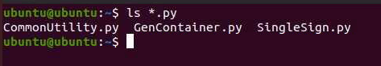{kind=link}
11. We need to generate the kernel command line parameters file. The following is a basic command line that can be used, you may modify it further if desired:
echo "root=/dev/nvme1n1p2 ro quiet splash" > cmdline.txt
We should now have the cmdline.txt file saved.
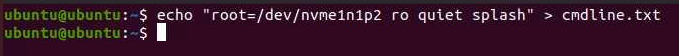{kind=link}
12. You will need to copy your OS1_TestKey_Priv_RSA2048.pem or OS1_TestKey_Priv_RSA3072.pem (depending on the RSA and SHA types specified in your BoardConfig.py) from your SblKeys folder where SBL was built to the Ubuntu machine and run the series of commands below to create the sbl_os container, copy this to the root/boot folder of your installation media, and lastly unmount the root partition of your installation media. The commands are as follows in this example:
python3 GenContainer.py create -cl CMDL:cmdline.txt KRNL:./root/boot/vmlinuz-<kernel-version> INRD:./root/boot/initrd.img-<kernel-version> -k ./SblKeys/OS1_TestKey_Priv_RSA3072.pem -a RSA3072_PKCS1_SHA2_384 -t CLASSIC -o sbl_os
sudo cp sbl_os ./root/boot
sudo umount ./root
The output should look something like the below.
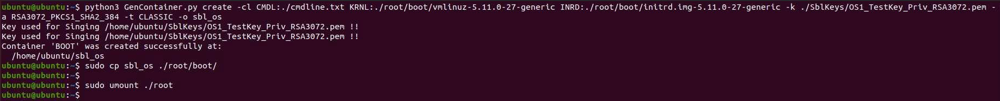Shutdown the Ubuntu system, remove the USB flash drive, and reboot the system.
SBL should now be able to boot the Ubuntu sbl_os container file.
If you are facing difficulty check the boot command output to confirm your boot options are configured similar to the below (depending on the media you installed Ubuntu to):
Idx|ImgType|DevType|DevNum|Flags|HwPart|FsType|SwPart|File/Lbaoffset
0| 0| NVME | 0 | 0 | 0 | EXT2 | 1 | /boot/sbl_os *Current
This is indicating that NVMe device number instance 0 (if you have more than 1 NVMe you may need to try the other device instances) should have a 2nd partition (e.g. SwPart=1) with an EXT2/3/4 file system and the file /boot/sbl_os which is the Ubuntu container image generated in the earlier steps. If earlier you skipped adding the FAT32 partition your SwPart value should be set to 0 instead.